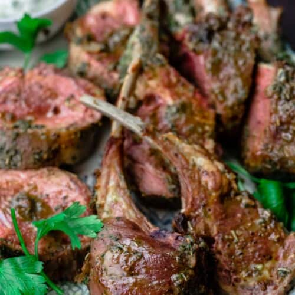

Rack of Lamb

Description
Tender, oven roasted rack of lamb is elegant and easy to prepare. You'll love this lamb rack covered in a simple Mediterranean garlic and herb marinade and cooked for a quick 15 to 20 minutes in a high-heated oven.
Ingredients
For The Garlic-Herb Marinade
- 10 garlic cloves
- 1/4 cup extra virgine olive oil
- 1 cup lightly packed fresh parsley
- 2 teaspoon dry rosemary
- 1/2 teaspoon red pepper flakes
For The Rack of Lamb
- 2 lamb racks
- Kosher salt and ground black pepper
Steps
- In the bowl of a small food processor fitted with a blade, add the garlic, olive oil, parsley, rosemary and red pepper flakes. Run the processor until the mixture is well-combined and everything is finely chopped.
- Season the lamb all over with kosher salt and pepper.
- Rub each rack of lamb all over with the marinade. Let the lamb marinate for 20 to 30 minutes at room temperature (or if you have the time, up to 1 hour).
- Heat the oven to 450 degrees F and place a rack on the top ⅓ of the oven.
- Arrange the lamb racks (fat side pointing up) on a sheetpan. Place the sheetpan on the top oven rack for 15 minutes. Carefully remove it from the oven and turn the rack of lamb on the other side. Return to the oven and cook for another 5 to 10 minutes depending on how you like your rack of lamb (rack of lamb is typically served rare or medium-rare, but you can also serve it medium).
- Remove from the oven and tent with foil. Allow the lamb about 10 minutes to rest (the temperature will rise and the lamb will continue to cook some more).
- Cut the lamb chops in between the bones and arrange on a platter to serve. (Add a side of Tzatziki sauce if you like).
Disclaimer: recipe copied from The Mediterranean Dish website for the sole purpose of completing this project, no copyright infringement intended. Recipe was also used for cooking said lamb at home and the lamb was awesome!